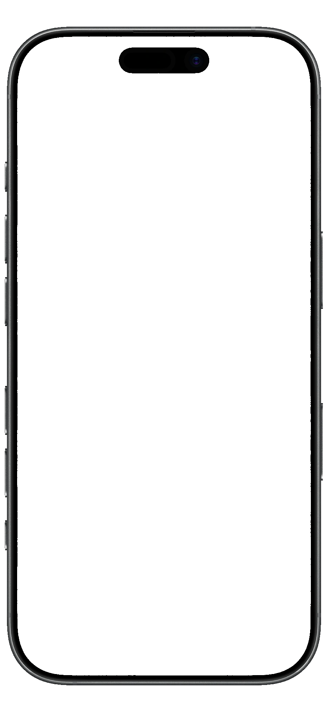

管理画面（manage.html）と同じトークンを使います。管理画面でログイン済みなら、そのまま開けます。
上の大きな丸で調整（本物の 2.2 倍）。下は公式サイトと同じ大きさ・同じ見た目の表示です。

ピンクの枠 = iPhone の画面に見える範囲／点線 = 自動のときに見える範囲
iPhone の画面の中をドラッグすると位置、ホイール（スマホは2本指）か「拡大」で大きさを変えられます。
キーボードなら iPhone をクリック（Tab）してから矢印キーで位置（Shift で大きく）、+ / − で大きさ。
「保存」すると全員に共有され、数分〜10分ほどで公式サイトのスライダーに反映されます（画像のキャッシュのため。DM 通知の顔は変わりません）。
立ち絵1枚目を差し替えると、その人の調整は使われず自動に戻ります（調整し直してください）。
大きな丸の中をドラッグすると顔の位置、ホイール（スマホは2本指）か「拡大」で大きさを変えられます。
キーボードなら丸をクリック（Tab）してから矢印キーで位置（Shift で大きく）、+ / − で大きさ。
「保存」すると全員に共有され、数分〜10分ほどで公式サイトの DM 通知（吹き出しの丸い顔）に反映されます（スライダーは変わりません）。
登録の無い人は画像の上の部分（幅いっぱいの丸）を使います（一覧に「未登録（上の部分）」と出ます）。
立ち絵1枚目を差し替えると、その人の顔の位置は使われず既定（上の部分）に戻ります（調整し直してください）。